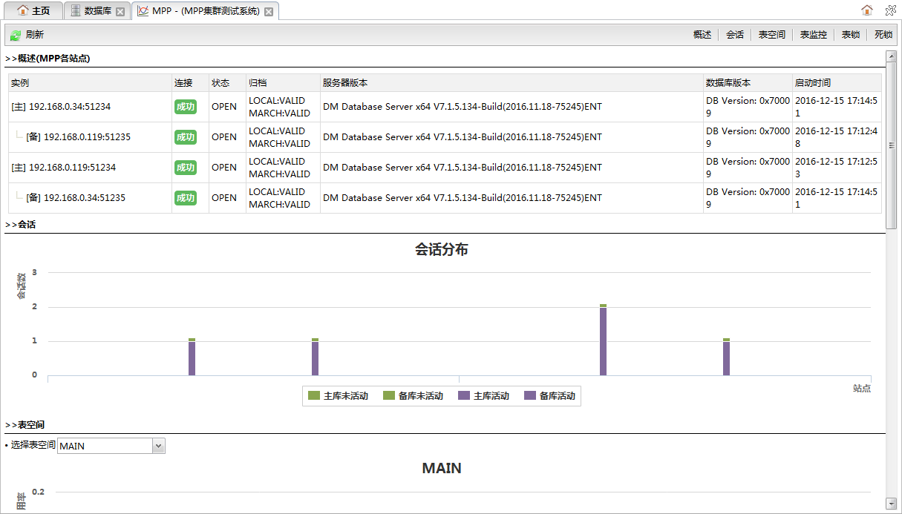
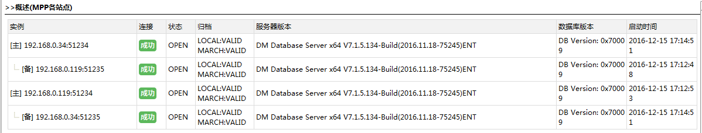
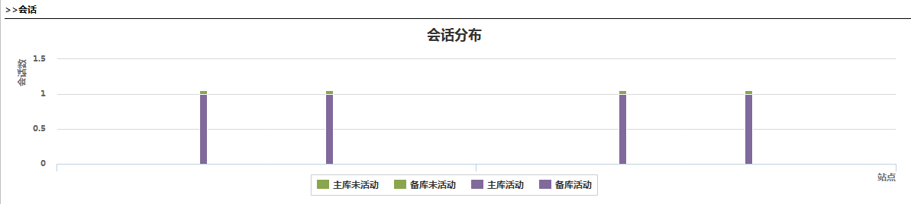
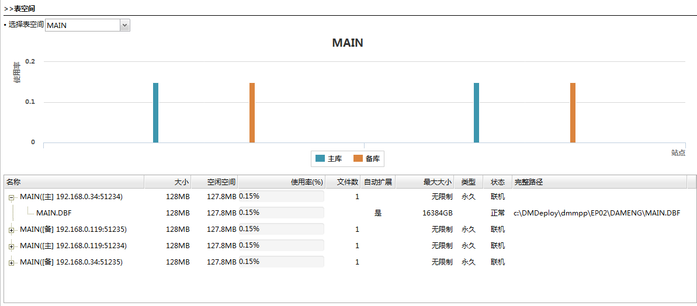
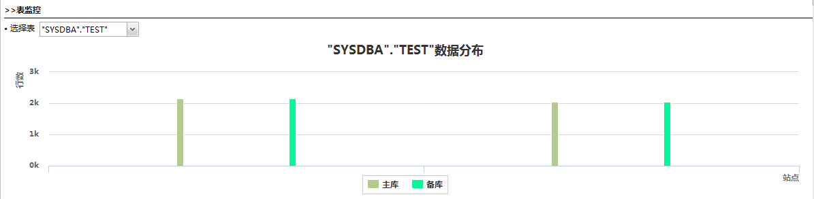
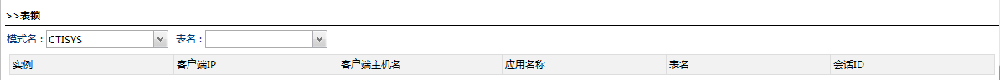
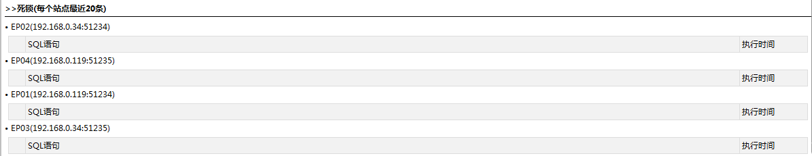

刷新
刷新从数据库监控面板中的集群分组的操作下拉菜单中点击集群分析可以打开集群分析面板，该页面用于查看集群的实时监控信息。报告中包括以下几个部分：
页面如下图所示:

功能按钮列表| 按钮 | 说明 |
|---|---|
| 刷新 |
刷新监控信息。 |
| 当前页面的模块定位按钮。点击每个按钮可以快速滚动到相应的模块。 |
集群站点基本信息，如下图所示：

集群站点列表
| 字段 | 说明 |
|---|---|
| 实例 | 刷新监控信息。表示实例为主机，表示实例为备机。 |
| 连接 | 连接实例是否成功。 |
| 状态 | 实例状态。 |
| 归档 | 实例的归档类型及状态。 |
| 服务器版本 | 实例的服务器版本。 |
| 数据库版本 | 实例的数据库版本。 |
| 启动时间 | 实例启动时间。 |
集群各站点的会话分布情况。柱形图的横坐标是站点，纵坐标是会话数。如下图所示：

集群各站点表空间使用情况，在图表上方的选择框中选择一个表空间进行查看。柱形图的横坐标是站点，纵坐标是表空间使用率。如下图所示：
表空间信息列表
列表中的主节点是各个站点上的表空间，子节点是表空间的数据文件。
| 字段 | 说明 |
|---|---|
| 名称 | 表空间名称。 |
| 大小 | 表空间大小。 |
| 空闲空间 | 表空间空闲空间大小。 |
| 使用率 | 表空间使用率。 |
| 文件数 | 表空间文件个数。 |
| 自动扩展 | 是否可以自动扩容。 |
| 最大大小 | 表空间限制最大大小。 |
| 类型 | 表空间类型。（永久、临时） |
| 状态 | 表空间状态。（联机、脱机） |
| 完整路径 | 表空间文件完整路径。 |
集群表的数据在各个站点的分布情况，在表格上方的选择框中选择一个表进行查看。柱形图的横坐标是站点，纵坐标是表数据行数。如下图所示：

集群表锁信息，在表格上方的选择框中选择一个表进行查看，如下图所示：

模式名
表的模式名。
表名
表的名称。
表锁信息列表
| 字段 | 说明 |
|---|---|
| 实例 | 数据库实例。 |
| 客户端IP | 客户端的IP地址。 |
| 客户端主机名 | 客户端的主机名称。 |
| 应用名称 | 应用程序名称。 |
| 表名 | 表名。 |
| 会话ID | 会话ID。 |
集群各站点最近发生的20次死锁信息。如下图所示：

死锁信息列表
| 字段 | 说明 |
|---|---|
| SQL语句 | 导致死锁的sql语句。 |
| 执行时间 | 死锁发生时间。 |